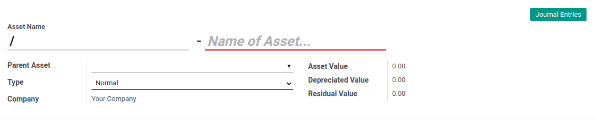
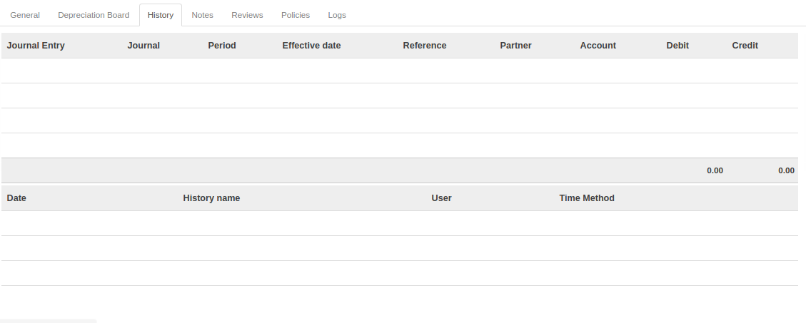

Penjelasan Fixed Asset
Informasi pada Fixed Asset dibagi menjadi beberapa area, diantaranya:
HEADER

Asset Name
Nama Aset.
Parent Asset
Hirarki induk aset yang dimaksud.
Type
Tipe akun aset.
Company
Nama perusahaan.
Asset Value
Nilai aset.
Depreciated Value
Nilai depresiasi aset.
Residual Value
Nilai sisa aset.
TAB GENERAL

Purchase Value
Nilai pembelian aset.
Asset Start Date
Tanggal awal aset.
Salvage Value
Nilai buku aset.
Asset Removal Date
Tanggal pemindahan aset.
Asset Category
Kategori aset.
Analytic Account
Kode biaya.
Partner
Penyedia aset.
Time Method
Metode perhitungan depresiasi aset.
Number of Years
Jumlah tahun depresiasi aset.
Period Length
Durasi waktu antar depresiasi aset.
Age Based On Period Length
Jumlah waktu berdasarkan lama periode.
Computation Method
Metode komputasi depresiasi aset.
Prorata Temporis
Jika diaktifkan, entri depresiasi awal akan dihitung dari awal pembelian aset.
Prorate by Month
to do
Date Min. to Prorate
to do
TAB DEPRECIATION BOARD

Hasil perhitungan depresiasi berdasarkan isian pada Tab General.
TAB HISTORY

Hasil entri accounting berdasarkan posting line depresiasi pada Tab Depreciation Board.
TAB NOTES

Catatan tambahan.
TAB REVIEWS

Definition
Definisi review yang digunakan.
Review Partners Validations
Daftar partner yang melakukan validasi.
TAB POLICY

Can Confirm
Kebijakan untuk dapat melakukan konfirmasi.
Can Close
Kebijakan untuk dapat melakukan closing.
Can Cancel
Kebijakan untuk dapat melakukan pembatalan.
Can Restart
Kebijakan untuk dapat melakukan restart.
Can Restart Approval
Kebijakan untuk dapat melakukan restart approval.
TAB LOG

Confirmation
Log aktifitas User yang melakukan konfirmasi.
Running On
Log aktifitas aset mulai dijalankan.
Closing On
Log aktifitas aset closing.
Cancel
Log aktifitas User yang melakukan pembatalan.